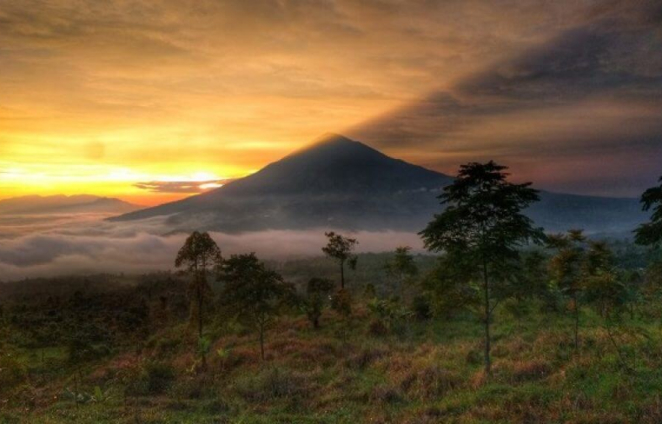
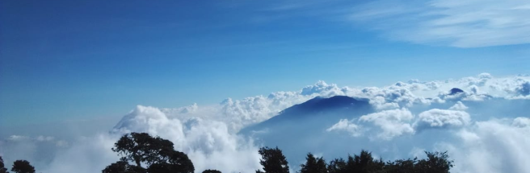

Open trip to Mount Cikuray. Mount Cikuray is a mountain located in Garut Regency, West Java, Indonesia. Mount Cikurai has a height of 2,821 meters above sea level and is the fourth highest mountain in West Java after Mount Gede. This mountain is located on the border of Bayongbong, Cikajang, and Dayeuh Manggung sub-districts. Srimangati Mandala Based on historical records, Mount Cikuray was once referred to as Mount Srimangati. Formerly, on the slopes of Cikuray there was a settlement of priests or mandalas, which was later called Mandala Srimangati. The mandala is used as a place to learn various kinds of knowledge. It was in this mandala that the tradition of writing in the Sunda Kingdom began until the 17th century. The results of these writings have now become the object of research on ancient manuscripts by historians. The manuscripts are currently stored in Kabuyutan Ciburuy, Cigedug, Garut.
Colonial Footprints on the Slope Turning to a more modern era, the slopes of Cikuray are a silent witness to the development of tea plantations in the colonial period, known as Perkebunan Waspada. Therefore, the hike to Cikuray begins with a trail of tea plantation bushes at its feet. The Cikuray tea plantation became famous because Karel Frederik,
19.00 : Participants of the Mount sindoro Dieng Open Trip gather at the Meeting Point Plaza festival Jakarta (absence & data collection).
20.00 : Depart to Dieng.
21.00 : Meeting Point Bekasi – Pertamina gas station next to the Amarosa hotel
22.00 : Meeting Point Karawang – Rest Area Km57
DAY II
06.30 : Arrive in Dieng, have breakfast at Selera Raja restaurant
08.00 : Explore the stone wailing wind
09:00 : Visit Dieng Theater
10.00 : Heading to the shelter, rest, packing etc
12.00 : Preparation for climbing, to basecamp climbing.
12.30 : Climbing Mount Prau to the camp area (estimated climbing time 3 hours).
16.30 : Arrive at the camp area (Savannah Prau), rest, sunset photo hunting, enjoy the sunset, return to the tent.
19.00 : Dinner, social gathering and rest.
DAY III
04.30 : Wake up early to prepare for sunrise camp and coffee time.
05.00 : Head to sunrise camp
06.30 : Back to the tent, breakfast, preparation and packing.
07.30 : Travel back to basecamp and shelter
10.00 : Arrive at basecamp, rest, shower etc.
11.00-23.00 : Travel back to Jakarta and the trip is over.
INCLUDE :
1. AC transportation to Dieng PP
2. tent
3. cooking utensils and cutlery
4. local guide
5. tour leader
6. 2x special meals + 1x ongklok noodles
7. Entrance tickets for tours and mountain prau insurance
8. tea and coffee
9. group porter
10. Documentation
COST NOT EXCLUDE :
1. mattress IDR 15.000
2. sleeping bag IDR 20,000
3. private porter IDR 350.000
4. personal expenses
5. meals that are not included
6. sincere tips
7. personal expenses
8. Eat 1x
9. Mineral water
10. Tour guide